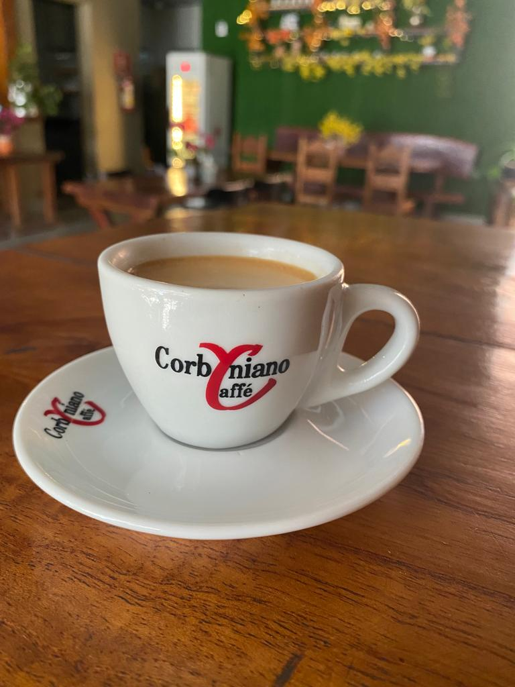
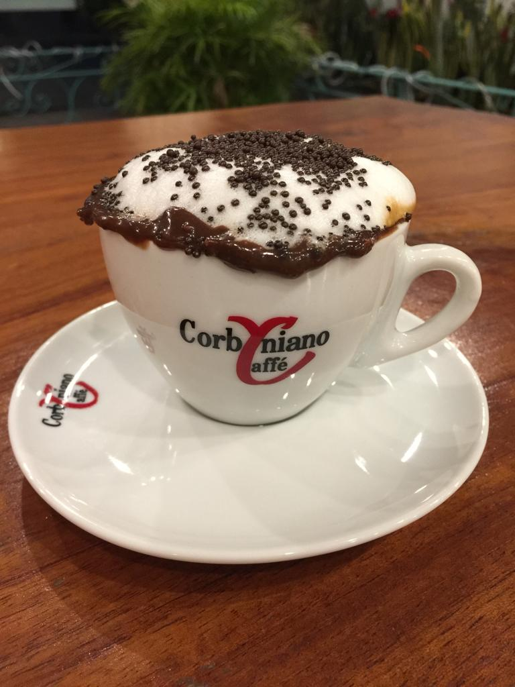

Espresso
Cappuccino

Capuccino Brigadeiro
Cappuccino Prestígio
Amendoim Coffee Shake

O desejo de montar a cafeteria surgiu quando seus proprietários, Alexandre Moreira e Andrea Corby viveram em Portugal por alguns anos.
Na europa eles absorveram
o ambiente dos cafés, e não podiam deixar de trazer esta cultura para Montes Claros, cidade natal de Andrea.
Assim, o Corbyniano Caffè se tornou um
dos locais mais bem
frequentados e buscados da cidade desde 2009.
Corbiniano Rodrigues Aquino foi um químico, industrial, comerciante,
escritor, advogado de Montes Claros,
tendo o seu nome mais conhecido
pelo famoso Licor de Pequi Corby, que até hoje é comercializado
em Montes Claros.

Para visualizar mais produtos, visite nosso Instagram!